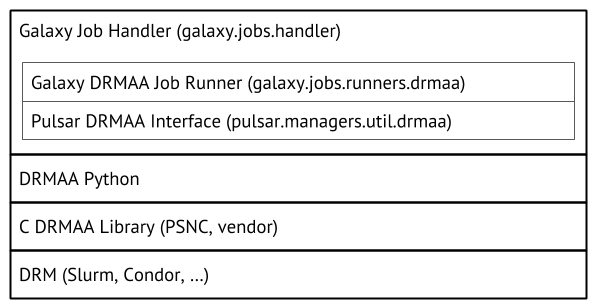

Connecting Galaxy to a compute cluster
Contributors
| Author(s) |
|
Questions
How to connect Galaxy to a compute cluster?
How can I configure job dependent resources, like cores, memory for my DRM?
Objectives
Understand all components of the Galaxy job running stack
Understand how the job conf controls Galaxy’s jobs subsystem
Know how to map tools to job destinations
The various ways in which tools can be mapped to destinations, both statically and dynamically
Galaxy Job Configuration
- Configured in
job_configingalaxy.yml,group_vars/galaxyservers.yml, andfiles/galaxy/config/tpv*.yml - Major components:
- Runners: distributed resource manager (DRM) modules to load
- Handlers: dedicated Galaxy server processes managing the lifecycle of jobs
- Environments (aka “destinations”): where to send jobs, and what parameters to run those jobs with
- Tool to destination/handler mappings
- Resource selection mappings: give users job execution options on the tool form
- Limits: job runtime limits, e.g. the max number of concurrent jobs
Speaker Notes
- The job_conf file is a very powerful galaxy configuration piece critical to smooth cluster operation.
- Written in YML, it connects your server with the available cluster resources.
- You can configure it in myriad ways.
- Study the advanced sample provided with codebase once you get a basic understanding.
- There are several major components of the job conf file.
- Plugins, handlers, environments (destinations), tools, resources, and limits.
- We’ll go into detail on each of these in the tutorial.
Why cluster?
Running jobs on the Galaxy server negatively impacts Galaxy UI performance
Even adding one other host helps
Can restart Galaxy without interrupting jobs
Speaker Notes
- Galaxy itself is not resource hungry, but the jobs often are.
- Offloading the jobs to different machines is a more sustainable and reliable setup.
- This can prevent user jobs from making Galaxy unresponsive.
Runners
Correspond to job runner plugins in lib/galaxy/jobs/runners
.left[Plugins for:]
- local
- Slurm (DRMAA subclass)
- DRMAA (Distributed Resource Management Application API)
- SGE
- PBS Pro
- LSF
- Torque
- HTCondor
- Torque: Using the
pbs_pythonlibrary - Pulsar: Galaxy’s own remote job management system
- Command Line Interface (CLI) via SSH
- Kubernetes
- Go-Docker
- Chronos
Speaker Notes
- Galaxy supports plugins for various job runners covering most of the popular DRMs.
- The Galaxy community also maintains its own job management system called Pulsar.
- If the scheduler you use is missing, talk to us!
Cluster library stack (DRMAA)

Speaker Notes
- The cluster library stack we use in this tutorial will use DRMAA.
- DRMAA is an interface that many distributed resource managers provide.
- Galaxy can use DRMAA to interact with these in an agnostic manner.
- However, there are more underlying technologies that you are going to depend on.
- You don’t need to have an in-depth understanding to run cluster deployment correctly.
Handlers
Control how jobs are assigned to handlers (use db-skip-locked)
Can statically define handler configuration (uncommon)
Speaker Notes
- Handlers are the Galaxy processes which interact with the cluster.
- You can define dedicated handlers for different types of jobs, or to interact with different clusters.
- Additionally, handlers definition in the job configuration controls how jobs are assigned to individual processes.
- There are many options for the assignment process, all are discussed in the advanced sample job configuration.
- db-skip-locked is the best choice for most cases, it enables handlers to grab multiple jobs to work on at once.
Environments
Formerly “Destinations”
Define how jobs should be run
- Which plugin? (Slurm, Condor, Pulsar, etc?)
- In a Docker container? Which one?
- DRM params (queue, cores, memory, walltime)?
- Environment (variables e.g.
$PATH, source an env file, run a command)?
Speaker Notes
- The environments section of the job configuration is a map that defines which jobs go where.
- Jobs from any destination, can be processed by any plugin.
- Every job will find a path through this configuration and eventually get dispatched to the matching runner.
- These destinations can specify things like environment variables or resource requirements.
The default job configuration
runners:
local:
load: galaxy.jobs.runners.local:LocalJobRunner
workers: 4
execution:
default: local
environments:
local:
runner: local
Speaker Notes
- This is the default job configuration.
- It uses a local runner with 4 workers, or processes to process jobs.
- As a result if you restart Galaxy, jobs will be lost.
Job Config - Tags
Both environments and handlers can be grouped by tags
- Allows random selection from multiple resources
- Allows concurrency limits at the environment group level
Speaker Notes
- Tags can be applied to both environments and handlers.
- This permits selecting randomly amongst the handlers or environments.
- Tags can help the load distribution.
- Tags can also be used for concurrency limits that apply across multiple environments.
Job Environment
env key in environments: configure the job execution environment
| syntax | function |
|---|---|
- {name: NAME, value: VALUE} |
Set $NAME to VALUE |
- {file: /path/to/file} |
Source shell file at /path/to/file |
- {execute: CMD} |
Execute CMD |
Source and command execution will be handled on the remote destination, don’t need to work on the Galaxy server
Speaker Notes
- You can specify environment variables on the destination.
- Galaxy will ensure these are executed in the same environment and ahead of the job.
Limits
Available limits
- Walltime (if not available with your DRM)
- Output size (if any tool output grows larger than this limit)
- Concurrency: Number of “active” (queued or running) jobs
Speaker Notes
- Configuration of job limits is best acommplished using both the DRM provided limits and the ones from Galaxy.
- Walltime is best set in your DRM, while output size is only possible through Galaxy.
- We recommend you set these at the DRM level which is better equipped to terminate misbehaving jobs.
- The most important limit however is usually concurrency.
Concurrency Limits
Available limits
- Number of active jobs per registered user
- Number of active jobs per unregistered user
- Number of active jobs per registered user in a specified environment or environment tag
- Number of total active jobs in a specified environment or environment tag
Speaker Notes
- Using concurrency limits lets you ensure quality of service for everyone.
- By limiting jobs per user, you can prevent a single user from overwhelming the server, and ensure everyone can run jobs.
- Additionally with concurrency limits you can balance your instance between internal and external users.
Shared Filesystem
Most job plugins require a shared filesystem between the Galaxy server and compute.
The exception is Pulsar. More on this in Running Jobs on Remote Resources with Pulsar.
Speaker Notes
- Most DRMs require a shared filesystem to ensure datasets are available to the jobs.
- Galaxy’s Pulsar does not, and can be used in situations where no shared filesystem is available.
Shared Filesystem
Our simple example works because of two important principles:
- Some things are located at the same path on Galaxy server and node(s)
- Galaxy application (
/srv/galaxy/server) - Tool dependencies
- Galaxy application (
- Some things are the same on Galaxy server and node(s)
- Job working directory
- Input and output datasets
The first can be worked around with symlinks, copies, or Pulsar embedded
The second can be worked around with Pulsar REST/MQ (with a performance/throughput penalty)
Speaker Notes
- For the DRMs which require a shared filesystem there are additional requirements.
- First, Galaxy and the tool dependencies are at the same location on the head and compute nodes.
- Job directories must be in a shared location on both head and compute nodes.
- This is mentioned in more detail in the tutorial.
Multiprocessing
Some tools can greatly improve performance by using multiple cores
Galaxy automatically sets $GALAXY_SLOTS to the CPU/core count you specify when submitting, for example, 4:
- Slurm:
sbatch --ntasks=4 - SGE:
qsub -pe threads 4 - Torque/PBS Pro:
qsub -l nodes=1:ppn=4 - Condor:
request_cpus: 4
Tool configs: Consume \${GALAXY_SLOTS:-4}
Speaker Notes
- For multiprocessing to be available both the tool and the Galaxy tool wrapper need to support it.
- You need to understand what tools are being run and set destinations for them with the appropriate specification.
- You’ll need to check for presence of GALAXY_SLOTS in the tool wrappers and tool macros to see if the tool supports multiple threads.
Memory requirements
For Slurm and Gridengine only, Galaxy will set $GALAXY_MEMORY_MB and $GALAXY_MEMORY_MB_PER_SLOT as integers.
Other DRMs: Please PR the appropriate code.
For Java tools, be sure to set -Xmx, e.g.:
java_cluster:
runner: drmaa
env:
- name: '_JAVA_OPTIONS'
value: '-Xmx6G'
Speaker Notes
- Memory requirements can be set as well.
- For some tools, you’ll need to additionally provide environment variables to specify memory limits.
- This is different per DRM.
Run jobs as the “real” user
If your Galaxy users == System users:
- Submit jobs to cluster as the actual user
- Configurable callout scripts before/after job to change ownership
- Probably requires limited sudo for Galaxy user
Speaker Notes
- If you galaxy users map to the system users you can have Galaxy run the jobs with the account of those users.
- This allows proper resource accounting, but comes at some additional configuration complexities.
Job Config - Mapping Tools to Environments
Problem: Tool A uses single core, Tool B uses multiple
- Both submit to the same cluster
- Need different submit parameters (
--ntasks=1vs.--ntasks=4in Slurm)
Speaker Notes
- Mapping tools to environments is the heart of the job configuration.
- This permits you to define which tools go to which destinations, and what resources they need.
Job Config - Mapping Tools to Environments
Solution:
execution:
default: singlecore_slurm
environments:
singlecore_slurm:
runner: slurm
multicore_slurm:
runner: slurm
native_specification: '--ntasks=4'
tools:
- id: hisat2
handler: multicore_slurm
Speaker Notes
- Here is an example mapping the hisat2 tool to an environment named multicore_slurm.
- The multicore environment specifies that 4 cores should be allocated for each job, and uses the slurm plugin.
The Dynamic Job Runner
For when basic tool-to-environment mapping isn’t enough
Speaker Notes
- However this static mapping sometimes isn’t sufficient.
- Here a dynamic mapping can be used instead.
- Galaxy has several different methods for accomplishing this.
The Dynamic Job Runner
A special built-in job runner plugin
Map jobs to destinations on more than just tool IDs
.left[Two types:]
- Total Perspective Vortex (TPV)
- Arbitrary Python function
See: Dynamic Destination Mapping
Speaker Notes
- There are two built in ways to do this: TPV and custom Python functions.
Total Perspective Vortex (TPV)
Powerful, fully dynamic tool-to-environment mapping based on tool, user, resource requirements, tags, and more.
Discussed in detail in its own tutorial.
See also: TPV Documentation.
Arbitrary Python Functions
.left[Programmable mappings:]
- Written as Python function in
lib/galaxy/jobs/rules/ - Map based on:
- Tool ID
- User email or username
- Inputs
- Tool Parameters
- Defined “helper” functions based on DB contents
- Anything else discoverable
- Cluster queue depth?
- …?
- Can dynamically modify destinations in job config (i.e.
sbatchparams)
Speaker Notes
- These can use any arbitrary information you want.
- They have full access to submitter information, job parameters, and any other resource you might want.
- They can dynamically modify destination parameters during runtime.
- If you need flexibility, these are what you want.
Key Points
- Galaxy supports a variety of different DRMs.
- Total Perspective Vortex is a convenient way to map
Thank you!
This material is the result of a collaborative work. Thanks to the Galaxy Training Network and all the contributors! Tutorial Content is licensed under
Creative Commons Attribution 4.0 International License.
Tutorial Content is licensed under
Creative Commons Attribution 4.0 International License.